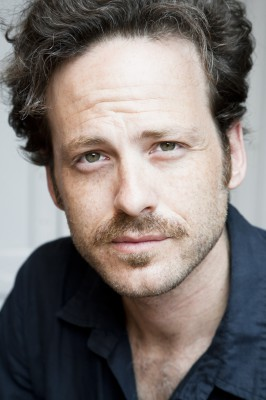
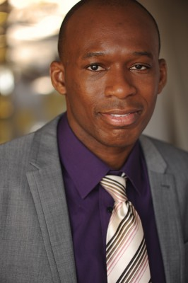
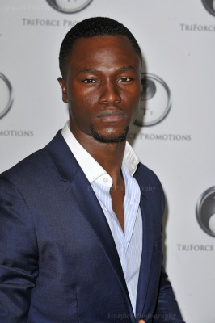

#1350 The Gunman
 gesehen am 29.12.2015
gesehen am 29.12.2015


 IMDB-Wertung: 5.8 / 10
IMDB-Wertung: 5.8 / 10  Metascore: 39
Metascore: 39 
Nach seinem Dienstaustritt möchte der ehemalige Special-Forces-Agent Jim Terrier (Sean Penn) ein normales Leben führen. Er will nicht mehr ständig in Gefahr sein, nicht mehr schießen, nicht mehr töten, sondern so viel Zeit wie möglich mit seiner großen Jugendliebe Annie (Jasmine Trinca) verbringen. Doch die Vergangenheit holt den Elite-Soldaten, der unter posttraumatischer Belastungsstörung leidet, unbarmherzig ein: Der Ex-Agent gerät plötzlich ins Fadenkreuz seines ehemaligen Auftraggebers und ein gnadenlose, atemlose Hetzjagd über den Globus beginnt, von Afrika über London bis nach Barcelona. Getrieben von der einmaligen Chance, seine alte Liebe zurückzugewinnen, setzt Terrier alles daran, seinen Namen wieder reinzuwaschen – und er bekämpft die Organisation, für die er einst sein Leben riskierte…
Jahr: 2015
Dauer: 115 Minuten
FSK: 16
Land: USA Studio: IITonspuren: DD5.1 - ,
Untertitel: Deutsch,
Auflösung: 1080p (1920x800) Größe: 5058 MB
Genre: Action, Thriller, Drama, Krimi, Mystery
Regisseur: Pierre Morel
Drehbuch: Jean-Patrick Manchette, Don MacPherson, Pete Travis, Sean Penn
Soundtrack: Marco Beltrami
Darsteller:
 Sean Penn als Terrier
Sean Penn als Terrier- Jasmine Trinca als Annie
 Javier Bardem als Felix
Javier Bardem als Felix Ray Winstone als Stanley
Ray Winstone als Stanley Mark Rylance als Cox
Mark Rylance als Cox Idris Elba als Barnes
Idris Elba als Barnes Peter Franzén als Reiniger
Peter Franzén als Reiniger Daniel Adegboyega als Bryson
Daniel Adegboyega als Bryson- Rachel Lascar als Camille
-  Mark Schardan als Procurement Chief, NGO
- Prasanna Puwanarajah als Doctor, UCL
- Tony Corvillo als Audience Member
 Dacio Caballero als Shooter
Dacio Caballero als Shooter Cuco Usín als Company Man
Cuco Usín als Company Man- Òscar Foronda als Company Man
- Ángela Fuente als Nurse
- Melina Matthews als Cox's Secretary
- David Blakeley als Man in Bar
- Gino Anganda als Congolese Bodyguard , uncredited
 Jozef Aoki als Japanese Tourist , uncredited
Jozef Aoki als Japanese Tourist , uncredited-  David Olawale Ayinde als Congolese Bar Customer , uncredited
 Paulina Boneva als Passerby , uncredited
Paulina Boneva als Passerby , uncredited Ancuta Breaban als Passer-by , uncredited
Ancuta Breaban als Passer-by , uncredited- Peter Brooke als Anchor , uncredited
 Erick Hayden als US Newscaster , uncredited
Erick Hayden als US Newscaster , uncredited-  John Samuel Kande als Terrorist , uncredited
 Jorge Leon Martinez als Special Agent , uncredited
Jorge Leon Martinez als Special Agent , uncredited Joseph Oliveira als Terrorist , uncredited
Joseph Oliveira als Terrorist , uncredited- Blanca Star Olivera als Tourist , uncredited
- Jose Pecino als Binman , uncredited
 Deborah Rosan als French Newsreader , uncredited
Deborah Rosan als French Newsreader , uncredited- Jayme Swiftt als Tough Guy , uncredited
 John Warman als Football Supporter , uncredited
John Warman als Football Supporter , uncredited Daniel Westwood als Spanish Military Guard , uncredited
Daniel Westwood als Spanish Military Guard , uncredited- Billy Billingham als Reed
- Ade Oyefeso als Eugene
- Alejandro Talavante als Bullfighter
- Florian Barisey als Village Boy
- Ismael Tunkara als Village Boy
- Amara Tunkara als Village Boy
- Miquel Àngel Ripeu als Medical Chief, NGO
- Txiki Blasi als North American Aid Worker, NGO
- Alito Rodgers als Security Chief, NGO
- Yussifu Alhassan als Local Security Man
- Enock Oppong als Young Villager, Drill
- Emilio Buale als Lead Pipe Hitter, Machete
- Hubert Gomis als Big Pipe Hitter
- Baboucarr Mbye Cham als Man in Truck
- Carla Pérez als Female Aid Worker
- Chris Starkie als London Pub Hooligan
Datei: X:\2015(G-M)\Gunman, The (2015, FSK16, 1920x800).mkv seit 26.06.2015
Festplatte: HD 2015(A-Z)
 Es gibt insgesamt 129 Filme in der Gruppe '2015(G-M)'
Es gibt insgesamt 129 Filme in der Gruppe '2015(G-M)'